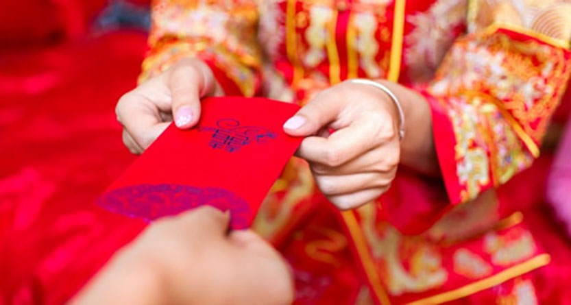

Cơ-đốc nhân và phong tục lì-xì ngày Tết
Trần Đình Tâm
tamtran1561@yahoo.com

Nếu chúng ta tìm hiểu về nguồn gốc, xuất xứ của phong tục lì xì, thì thấy lì xì có nguồn gốc từ Trung Quốc, sau đó lan sang một số nước Châu Á như Việt Nam, Nhật Bản. Ngày nay phong tục lì xì du nhập vào nhiều nước khác như Singapore, Indonesia, Malaysia … đặc biệt những người theo Hồi Giáo ngày nay rất yêu chuộng li xì.
Phong tục lì xì là một truyền thống lâu đời, kéo dài qua nhiều thế hệ, vì thế nên hầu hết mọi người không thật sự hiểu chuyện lì xì bắt nguồn từ lúc nào, hoặc lý do nào mà người ta khởi xướng chuyện lì xì.
Lì xì có ý nghĩa gì?
Lì xì là tiếng phiên âm của ngôn ngữ gốc Trung Quốc là “lợi thị”, tức là đạt được lợi lộc, may mắn. Ý nghĩa của lì xì không phải là lì xì nhiều tiền hay lì xì ít tiền, nhưng ở thiện ý của người lì xì. Tất nhiên đó là ý nghĩa nguyên thủy của lì xì.
Tại sao người lớn lì xì cho trẻ em?
Phong tục lì xì cho trẻ em bắt nguồn từ một truyền thuyết hoang đường, câu chuyện được kể lại với nhiều biến thể khác nhau, nhưng nội dung thì giống nhau. Người ta kể rằng hồi xa xưa ở xứ Đông Hải, thuộc tỉnh Giang Tô, Trung Quốc, có những yêu quái độc ác chuyên rình rập làm hại những trẻ em, nhưng chúng không thể làm gì được vì trẻ em được bảo vệ bởi các vị thần. Tuy nhiên, các vị thần bảo vệ trẻ em mỗi năm một lần phải về trời ngay thời điểm giao thừa. Do đó, lợi dụng lúc trẻ em không được bảo vệ, các yêu quái liền khuấy rối trẻ em khiến chúng khóc về đêm, bệnh tật, cha mẹ đứa trẻ phải thức khuya để trông chừng cho trẻ em ngủ … Một ngày nọ có 8 vị tiên đi ngang qua một gia đình kia, thấy hoàn cảnh đó liền hóa thành những đồng tiền nằm bên cạnh chỗ trẻ em đang nằm. Cha mẹ đứa trẻ liền đem gói các đồng tiền vào bên trong tấm vải màu đỏ để xua đuổi yêu quái. Không ngờ việc làm đó có kết quả tốt, yêu quái không dám làm hại đứa trẻ. Câu chuyện nầy lan truyền khắp nơi, rồi từ đó cứ mỗi dịp đầu năm mới âm lịch, người ta để tiền vào những cái túi màu đỏ rồi tặng cho trẻ em nhằm mục đích chúc cho chúng khỏe mạnh, chóng lớn.
Lúc khởi đầu phong tục lì xì chỉ dành cho trẻ em trong gia đình hay họ hàng thân thiết, nhưng ngày nay ở một số quốc gia hay trong một vài cộng đồng, việc lì xì không còn giới hạn. Người ta lì xì cho cả người lớn tuổi, cho bạn hữu, cho khách khứa …
Tại sao để tiền trong phong bì màu đỏ?
Trước hết, để tiền trong phong bì bày tỏ sự kín đáo, kế đến cho thấy sự tế nhị, trân trọng đối với hành động lì xì. Màu đỏ của phong bì tượng trưng cho sự may mắn, sự thịnh vượng suốt cả năm.
Ngày hôm nay, để tạo ra sự mới lạ, người ta làm ra những phong bì màu vàng, màu trắng (ở Nhật Bản), màu xanh lá cây (của người Hồi Giáo) với nhiều họa tiết phong phú để tạo sức hấp dẫn cũng như sự trang trọng cho phong bì lì xì.
Chúng ta dễ thấy những trẻ em cũng như người lớn đều vui mừng háo hức khi nhận được phong bì lì xì.
Con cái Chúa ngày nay nên duy trì hay bãi bỏ phong tục lì xì?
Với cái nhìn thoáng qua, chúng ta có thể nhận thấy phong tục lì xì không có gì sai trái với đạo đức Cơ-đốc, cũng không ảnh hưởng đến đức tin căn bản của người tín đồ. Đã bao lâu nay trong gia đình con cái Chúa vẫn duy trì phong tục lì xì cho con cháu mà không phải vì chuyện lì xì làm đức tin họ bị mai một hay nguội lạnh. Có thể hành động lì xì cho con cháu của người tin Chúa không xuất phát từ ý tưởng cầu chúc may mắn giống như cách mà người không tin Chúa lì xì; nói một cách đơn giản, cách lì xì của người tin Chúa không mang tính dị đoan như người chưa tin Chúa. Người tin Chúa chấp nhận chuyện lì xì vì đó là truyền thống dân tộc, họ đơn giản thực hành lì xì mà không cần phải suy xét hay chưa bao giờ suy xét xem chuyện lì xì bắt nguồn từ lý do gì và có phù hợp với nền tảng Thánh Kinh hay không.
Tuy nhiên, nếu chúng ta là những Cơ-đốc nhân khi đã hiểu biết về nguồn gốc và ý nghĩa của phong tục lì xì, thì liệu chúng ta có nên tiếp tục duy trì chuyện lì xì hay không?
Sau đây là những vấn đề chúng ta cần phải nắm vững trước khi quyết định:
1/ Phong tục lì xì bắt nguồn từ những câu chuyện hoang đường, nhuốm màu huyền hoặc và mê tín.
2/ Phong tục lì xì xét về nguồn gốc dù có ý tốt là cầu mong sự may mắn, nhưng lại ở dưới hình thức dị đoan, trái với lẽ thật từ Kinh Thánh. Chúng ta biết rằng phước hạnh (người chưa tin Chúa thường gọi là “may mắn”) đến do sự vâng lời Chúa dạy trong Kinh Thánh, chứ không phải qua hành động lì xì tiền trong phong bì màu đỏ. Hành động lì xì đầu năm cho con cháu hoàn toàn không đem đến một lợi ích thuộc linh nào cho con cháu, mà chỉ đem đến cho chúng niềm vui nhất thời vì có tiền tiêu xài! Các bậc cha mẹ, ông bà có thể cho con cháu tiền bất cứ lúc nào khi thấy chúng thật sự có nhu cầu về tiền, như vậy sẽ ích lợi và thiết thực hơn lì xì vào dịp tết cỗ truyền.
3/ Phong tục lì xì trong xã hội ngày nay đem đến những điều tiêu cực hơn là lợi ích:
+ Ngày nay việc lì xì không chỉ giới hạn cho trẻ em nhỏ, nhưng người ta còn lì xì cho cả lứa tuổi thanh thiếu niên. Điều nầy có nghĩa là lứa tuổi thanh thiếu niên đã có ý thức được giá trị của đồng tiền, nên họ chú ý đến tiền chứ không còn lưu tâm đến ý nghĩa của chuyện lì xì. Họ còn đánh giá người lì xì tiền cho họ qua số tiền nhiều hay ít. Người lì xì nhiều tiền sẽ được kính nể hơn người lì xì ít tiền.
+ Chúng ta có thể nhận thấy có những bậc cha mẹ dẫn con nhỏ đến nhà hàng xóm hay họ hàng, rồi bảo chúng mừng tuổi người lớn; tuy nhiên, ẩn ý của cha mẹ là để con mình nhận được tiền lì xì. Điều nầy đặc biệt thấy rõ khi trẻ em được cha mẹ dẫn đến nhà của những người khá giả, giàu có hơn là nhà của những người nghèo khó. Chúng ta đã vô tình dạy cho trẻ em lòng tham tiền bạc thông qua phong tục lì xì.
+ Phong tục lì xì đã gây áp lực trên những người có hoàn cảnh khó khăn khi họ phải đối diện với trẻ em vào những ngày Tết. Họ bị buộc phải lì xì cho trẻ nhỏ vì cha mẹ đứa trẻ ấy mong chờ điều đó và chính đứa trẻ cũng đang chờ đợi được lì xì. Đó là chưa kể quy luật “bánh ít đi bánh quy lại” ở những gia đình mà hai phía đều có con nhỏ. Chưa hết, cha mẹ có 1 đứa con cảm thấy “thiệt thòi” khi so sánh với cha mẹ có đông con!
Tóm lại, Lời Chúa dạy chúng ta: “Mọi sự đều có phép làm, nhưng chẳng phải mọi sự đều có ích; mọi sự đều có phép làm, nhưng chẳng phải mọi sự đều làm gương tốt.” (I Cô-rinh-tô 10:23)
Câu Kinh Thánh trên có thể áp dụng cho phong tục lì xì. Chuyện lì xì rõ ràng là việc có phép làm, nhưng nó có ích lợi hay có làm gương tốt hay không? Có những việc chúng ta không thể chọn giữa TỐT hay XẤU; ĐÚNG hay SAI; nhưng là sự lựa chọn giữa NÊN hay KHÔNG NÊN. Phong tục lì xì có NÊN duy trì hay KHÔNG NÊN duy trì?
Rô-ma 12:2 dạy: “Đừng làm theo đời nầy … ”. Nguồn gốc và ý nghĩa của phong tục lì xì mang tính dị đoan vì nó bắt nguồn từ đời nầy, từ thế gian mà ra và lưu truyền trong xã hội người Việt chúng ta cho đến ngày nay, con cái Chúa trong Hội Thánh cũng thực hành theo truyền thống đó. Vậy con cái Chúa có nên bắt chước theo lề lối của thế gian hay không?
10/02/2021